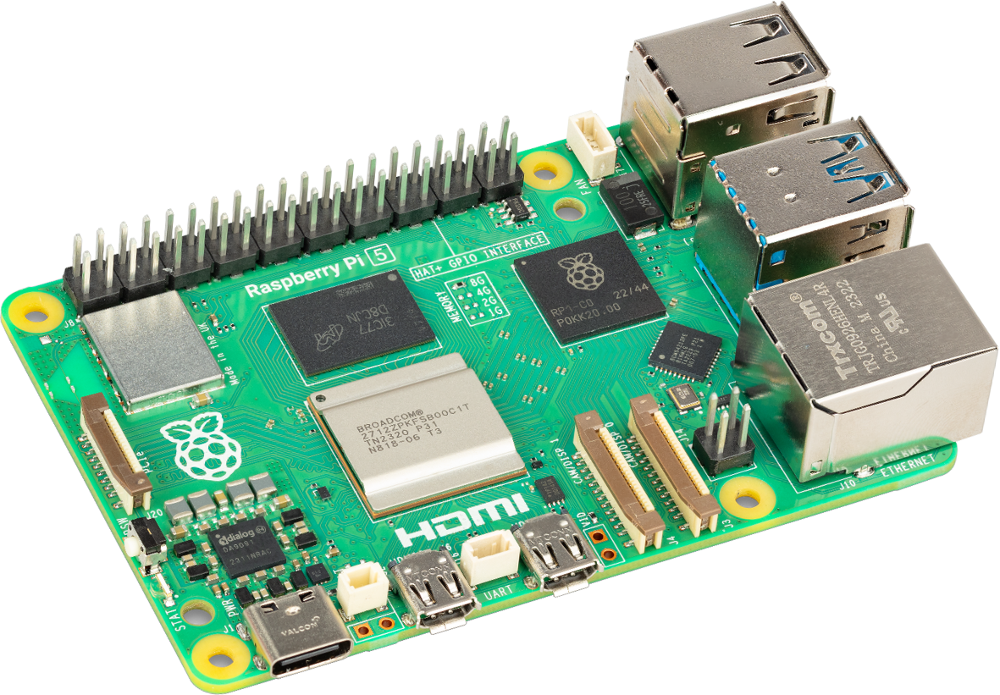

Description des caractéristiques du Raspberry-Pi 4
Le Raspberry Pi 4 est équipé d'un processeur quad-core ARM Cortex-A72, 64 bits, fonctionnant à une vitesse de 1,5 GHz, offrant de bonnes performances pour des tâches variées. Il est disponible avec différentes capacités de RAM : 2 Go, 4 Go ou 8 Go de mémoire LPDDR4, permettant une flexibilité selon les besoins. Il possède quatre ports USB, dont deux ports USB 3.0 pour des transferts rapides, et deux ports USB 2.0 pour des périphériques classiques. Le Raspberry Pi 4 intègre également le Wi-Fi 802.11ac en dual-band (2,4 GHz et 5 GHz), le Bluetooth 5.0 avec BLE, ainsi qu'un port Gigabit Ethernet pour des connexions réseau rapides. En termes de sortie vidéo, il est équipé de deux ports micro-HDMI, capables de supporter des résolutions allant jusqu'à 4K
